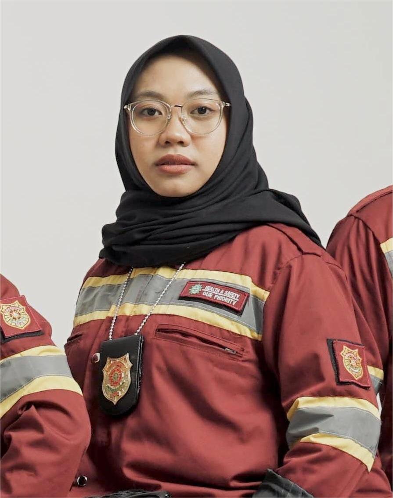
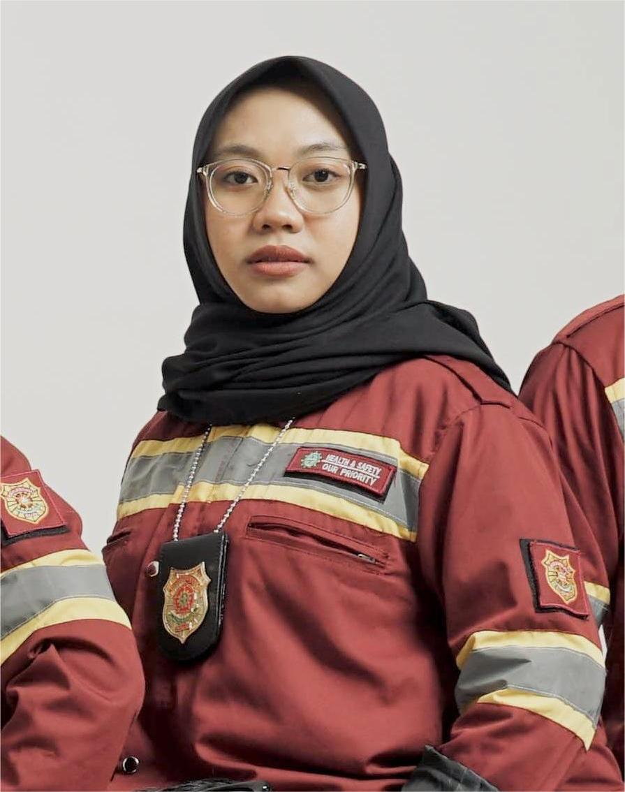

About Me
Dedicated and detail-oriented Industrial Engineering graduate with over 2 years of experience leading organizations and projects, with a strong foundation in culture building and operational excellence. Demonstrated ability to drive team performance through effective coordination, strategic planning, and strong interpersonal communication. Skilled in applying Lean Six Sigma principles to streamline processes, foster continuous improvement, and build a culture of accountability and innovation. Resilient, adaptable, and highly collaborative, with a passion for nurturing positive workplace culture and aligning teams toward shared goals. Eager to embrace challenges and deliver impactful, innovative solutions.